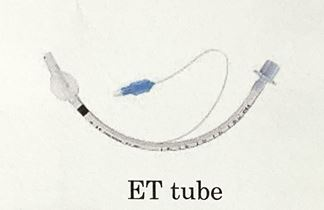
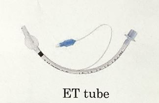

Emergency
응급
응급
응급상황시 필요한 카트
침습적 처치 시 감염 또는 전염으로부터 대상자와 간호사 자신을 보호하기 위해 착용
1~60mL로 크기는 다양하나 5mL ,10mL를 구비해 놓고 응급상황에서 IV할떄 또는 튜브를 고정시키지위해 사용
혈관으로 삽입되며 syringe와 연결 굵기는16~30게이지로 다양(숫자가 낮을 수록 굵어짐) 주로 18g는 수술, 수혈, 응급수액공급시 사용(22g는 IV시 사용)
IV시 정맥구환을 차단하여 정맥이 확장되도록 함 출혈시 응급처치로 과다출혈예방을 위해 사용

정맥의 개방성 유지하기 위한 정맥에 장착하는 관 (장기간 수약, 약물을 혈관으로 주입)

오른쪽으 긴 구멍에 카테터를 연결 다른 두 쪽은 수액과 주사기 연결을 할수 있도록 Side Shooting 또는 두 개 이상의 수액을 주입할 때 사용

삽입침,점적동,조절기 튜브로 구성 장기간수액주입시 삽입침은 수액용기와 연결투브의 끝 부분은 정맥 카테터와 연결
수액 line E- tube 등 고정할 때 사용
혈액검사(CBC-정맥혈 ABGA동맥혈)를 위해 혈액채취시 사용 (5,10mL / 18,19 guage)
일회용 밀봉용기로 검사 종류에 따라 색깔을 나눠 구분 검사 목적에 따라 용기 내에 항응고제나 응고촉진제등이 도포되어있음
알고 있어야할 사항
| Temperature(BT 체온) | Heart Rate(Pulese 심박수) | Respiration Rate(Pesp 호흡수) | Blood Pressure(BP 혈압) | |
|---|---|---|---|---|
| [ 강아지 ] | 정상체온 :38.0 ~ 39.0 대형견 : 37.3 ~ 38.3 | 소형견 :70 ~ 180 / min 대형견 :60 ~ 120 / min | 10 ~ 30회 /min | 수축기 :110 ~ 160 mmHg 이완기 :60 ~ 100 mmHg 평균 :80 ~ 120 mmHg |
| [ 고양이 ] (보다빠르거나높음) | 38.0 ~ 39.5 | 110 ~ 220 / min | 25 ~ 42회 / min | 수축기 :120 ~ 170 mmHg 이완기 :70 ~ 120 mmHg 평균 :80 ~ 120 mmHg |
Cardio Pulminary Arrest (심폐정지) 자발적인 호흡과 순환이 갑작스럽게 정지된 상태
마취시 갑작스러운 CPA 상화잉 발생하면 빠르게 마취를 잠그고 산소 공급
아이의 상태를 항상 인지하고 살 살피는 것이 중요
Cardio Pulminary Resuscitation 심장정지의 상황에서 심장을 인공적으로 압박하여 혈액(산소)을 공급 혈액순환과정을 확보하는 구조법
CAP 가 인지된 상황에서는 CPR이 진행되어야한다.
 



보통 A - B - C 순서로 진행 (상황에 따라 C - A - B 로 진행될 수 있음)
.JPG)
.JPG)
Mobinol(Glycopyrrolate)
Epineprine
자동혈압계와 도플러 혈압계로 나뉨
심장이 뛰기 시작하며 PLS가 진행되어야한다